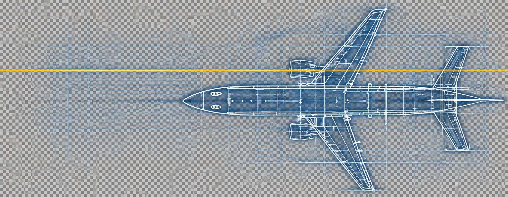
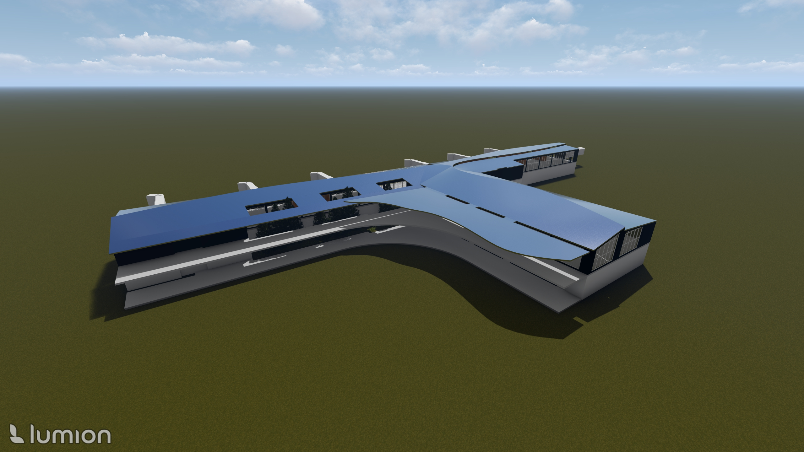
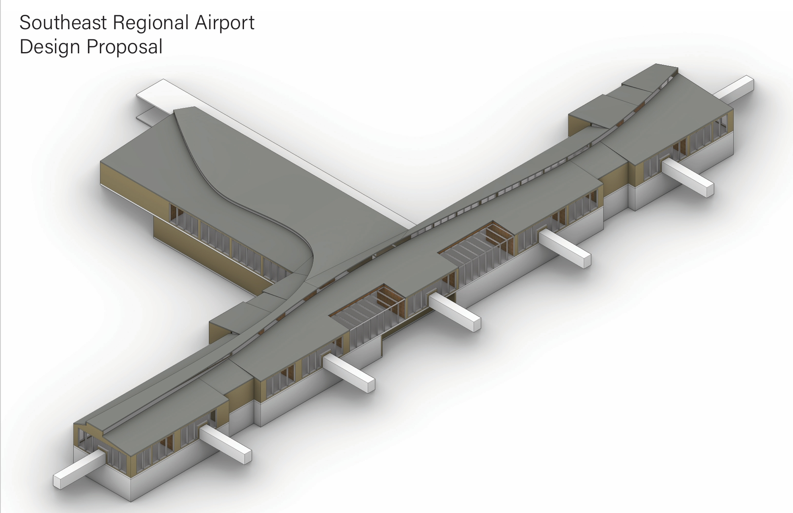

STRUCTURAL DESIGN
Regional Airport
Terminal Design
Semester-Long Academic Project
1st Place Competition Winner
A seven-gate regional airport terminal designed through an integrated structural, architectural, and operational approach.
Project Overview
A seven-gate regional airport terminal developed as part of a semester-long multidisciplinary airport design project that earned 1st place in competition. As Terminal Building Design & Aircraft Operations Lead, I developed the terminal's functional configuration and space program while contributing to its overall structural form and roof framing concept, coordinating the building around passenger processing requirements and gate operations.
This project demonstrates how structural, architectural, and operational systems can work together to create an efficient, passenger-focused regional airport terminal.
Project Images



Key Highlights
- 1st Place in Competition
- Fully Functional Terminal Design
- Integrated Structural & Architectural Concept
- Real-World Airport Operational Requirements
- Quantitative Space Programming
- Seven-Gate Layout with Efficient Passenger Flow
Design Significance
The terminal geometry integrates multiple engineering and operational systems, requiring the building to function as both an occupied facility and a critical airport infrastructure component. What distinguishes the terminal is the way its form responds to passenger processing, security, baggage movement, concessions, circulation, gate operations, and structural efficiency — all competing for space.
Technical Highlights
- Integrated structural & architectural design
- Efficient passenger processing
- Security & baggage flow coordination
- Large-span roof framing concept
- Real-world operational requirements
- Multidisciplinary design solution